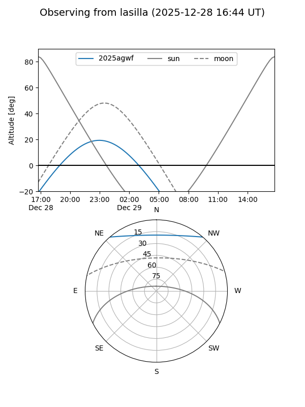
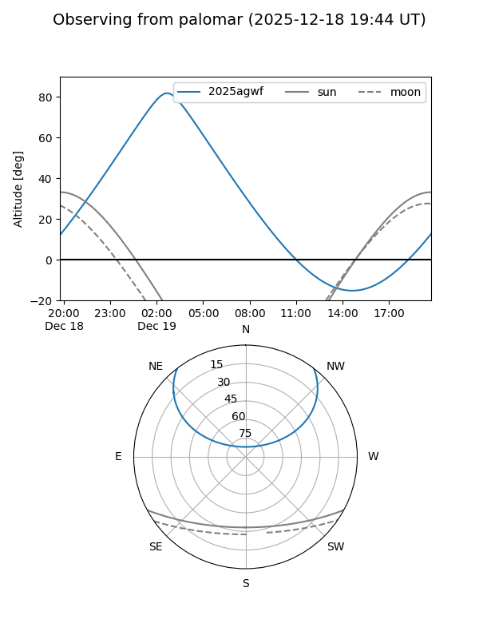
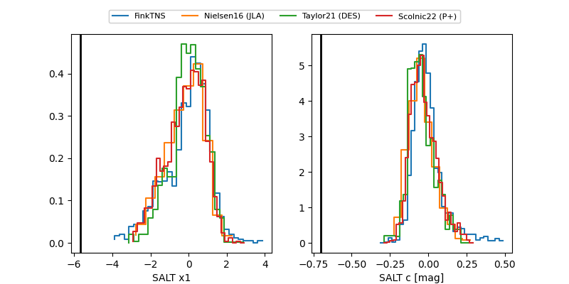

2025agwf
Target 2025agwf at 2025-12-19 05:29
Aliases and brokers:
FINK: fink-portal.org/ZTF25achqkvb
Lasair: lasair-ztf.lsst.ac.uk/objects/ZTF25achqkvb
ALeRCE: alerce.online/object/ZTF25achqkvb
TNS: wis-tns.org/object/2025agwf
YSE: ziggy.ucolick.org/yse/transient_detail/2025agwf
alt names
ZTF25achqkvb (ztf,fink_ztf)
2025agwf (tns,yse)
Coordinates:
equatorial (ra, dec) = 10.8234,+41.23882
equatorial (HMS+DMS) = 00:43:17.62,+41:14:19.75
galactic (l, b) = (121.2853,-21.60689)
Flags:
likely cv
Photometry:
last atlasc=18.32, ztfg=17.80, ztfr=16.47
1 atlasc, 2 ztfg, 1 ztfr detections
Lightcurve

Visibility


Additional plots
